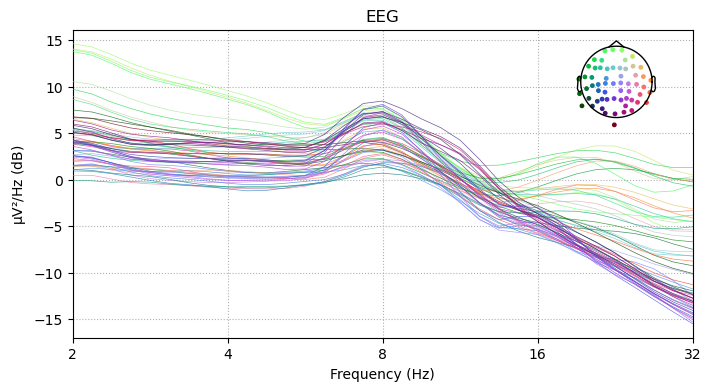
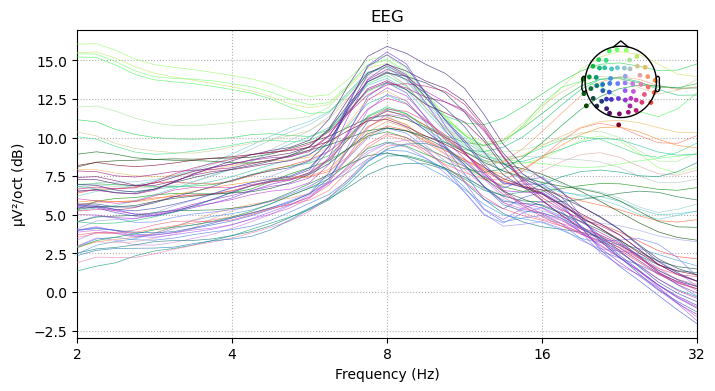
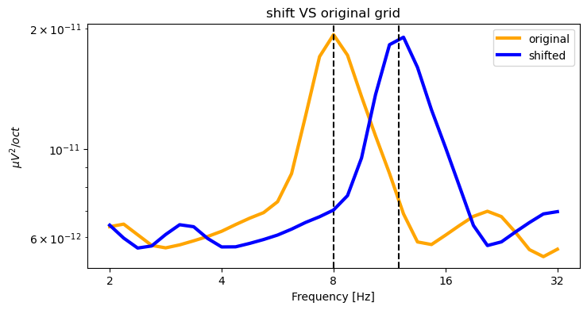

import numpy as np
import matplotlib
import matplotlib.pyplot as plt
import mne
from mne.datasets import sample
import meeglet
from meeglet import compute_spectral_features, spectrum_from_featuresEEG power
Compute, plot and manipulate EEG power spectra using Morlet Wavelets
In this example we will load the fmailiar MNE sample data and compute Morlet Wavelets.
Load data
Let’s read in the raw data and pick the EEG channel type
data_path = sample.data_path()
raw = mne.io.read_raw_fif(data_path / 'MEG/sample/sample_audvis_raw.fif')
raw = raw.pick_types(meg=False, eeg=True, eog=False, ecg=False, stim=False,
exclude=raw.info['bads']).load_data()
raw.set_eeg_reference(projection=True).apply_proj()General
| Measurement date | December 03, 2002 19:01:10 GMT |
| Experimenter | MEG |
| Participant | Unknown |
Channels
| Digitized points | 146 points |
| Good channels | 59 EEG |
| Bad channels | None |
| EOG channels | Not available |
| ECG channels | Not available |
Data
| Sampling frequency | 600.61 Hz |
| Highpass | 0.10 Hz |
| Lowpass | 172.18 Hz |
| Projections | Average EEG reference : on |
| Filenames | sample_audvis_raw.fif |
| Duration | 00:04:38 (HH:MM:SS) |
Compute the features using the high-level API of meeglet.
This will return tow simple namespaces, one for the spectral features, one for the meta data.
features, info = compute_spectral_features(
raw, foi_start=2, foi_end=32, bw_oct=0.5, density='Hz', features='pow')Use MNE high-level plotting API
To make use of MNE’s latest Spectum data container, we can use a little helper function from meeglet
Power spectrum plot (2D lines)
Now we can readily make use of MNE’s plotting API. Let’s first plot data on a linear scale
spectrum = meeglet.spectrum_from_features(
features.pow, info.foi, raw.info
)fig = plt.figure()
spectrum.plot(dB=True, axes=plt.gca())
fig.set_size_inches(8, 4);
fig;
Let’s update the output to log scale with base = 2. Note that for a base 10 logarithm, we could have simply used the xscale from the plot method. Some adjustments follow to reflect updated scaling
fig = plt.figure()
spectrum.plot(dB=True, axes=plt.gca())
fig.axes[0].set_xscale('log', base=2)
fig.axes[0].set_xticks(2 ** np.arange(1, 6), 2 ** np.arange(1, 6))
fig.set_size_inches(8, 4);
fig;
Topographic plots
Using default settings, MNE will returns bands.
spectrum.plot_topomap(cmap='viridis');
But we can simply pass frequency coordinates as tuples. Of note, due to the logarithmic frequency grid and the particular octave band width, one octave is reached every 8 indices if we use a band width of 0.5 and bw / 4 spaxcing (defaults).
info.foi[::8]array([ 2., 4., 8., 16., 32.])freqs = info.foi[::8][2:]spectrum.plot_topomap(zip(freqs, freqs), cmap='viridis');
Finally, we can normalize the output, such that the total power adds up to one.
spectrum.plot_topomap(zip(freqs, freqs), cmap='viridis', normalize=True);
Advanced Options
Octave scaling
To take into account a-periodic dynamics, we can integrate over octaves, i.e. \(log_2(Hz)\). As a result, the 1/f will be mitigated.
features2, info = compute_spectral_features(
raw, foi_start=2, foi_end=32, bw_oct=0.5, density='oct', features='pow')
spectrum_oct = spectrum_from_features(
data=features2.pow,
freqs=info.foi,
inst_info=raw.info
)fig = plt.figure();
spectrum_oct.plot(dB=True, axes=plt.gca());
fig.set_size_inches(8,4);
fig.axes[0].set_xscale('log', base=2);
fig.axes[0].set_xticks(2 ** np.arange(1, 6), 2 ** np.arange(1, 6));
for tt in fig.findobj(plt.Text):
if '/Hz' in tt.get_text():
tt.set_text(tt.get_text().replace('Hz', 'oct'));
fig;
Frequency shifting
We can now explore shifting in log domain. We will apply a frequency shiftt to arbitrary reference=12Hz. Then we plot both results using the original frequency grid
reference = 12
peak = 8 # we know this subject has an 8 Hz peak.
shift = peak / reference
features3, info3 = compute_spectral_features(
raw, foi_start=2, foi_end=32, bw_oct=0.5, density='oct',
features='pow', freq_shift_factor=shift
)plt.close('all')
fig = plt.figure()
plt.ion()
plt.title('shift VS original grid')
plt.loglog(info.foi, features2.pow.mean(0), label='original', color='orange',
linewidth=3)
plt.axvline(peak, color='black', linestyle='--')
plt.semilogy(info3.foi, features3.pow.mean(0), label='shifted', color='blue',
linewidth=3)
plt.axvline(reference, color='black', linestyle='--')
plt.legend()
plt.xlabel('Frequency [Hz]')
plt.ylabel(r'${\mu}V^2/oct$')
fig.axes[0].set_xscale('log', base=2)
fig.axes[0].set_xticks(2 ** np.arange(1, 6), 2 ** np.arange(1, 6))
fig.set_size_inches(8, 4)
fig;
One can nicely see the up-shift while the x axes are identical.
We can now see that the default log-scaled smoothing leads to smoother PSD estimates in high frequencies. On the left-hand side, we see that log scaling VS linear scaling are more similar in low frequencies.